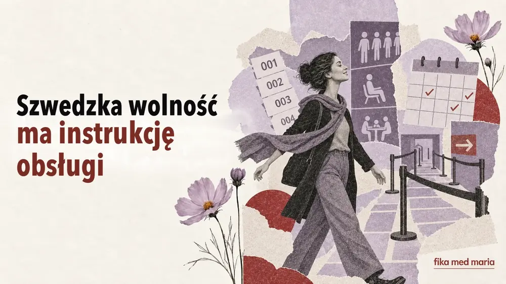

Szwedzka wolność ma instrukcję obsługi: dlaczego kraj indywidualistów tak lubi zasady

Szwecję często opisuje się jako kraj osobistej wolności. Nie ma tu zwyczaju nadmiernie wtrącać się w cudze życie, dorosły człowiek sam dokonuje wyborów, a dzieci wcześnie zyskują prawo głosu.
A jednocześnie w pralni jest kalendarz, w kolejce – numerek, na spotkanie trzeba się umówić, a przy kontenerze wisi szczegółowy schemat segregacji.
To nie jest sprzeczność. Szwedzka wolność często działa według formuły frihet under ansvar – wolność razem z odpowiedzialnością.
Swobodnie, dopóki nie przerzucasz skutków na innych
Możesz zorganizować dzień pracy po swojemu – jeśli dotrzymujesz ustaleń. Możesz spędzać czas na łonie natury – jeśli dbasz o to miejsce. Możesz korzystać ze wspólnej pralni – jeśli nie zabierasz cudzego czasu i zostawiasz ją czystą.
Granica nie przebiega między „wolno” a „nie wolno”, lecz między własną wolnością a niewygodą, za którą przyjdzie zapłacić innym.
Dlatego w szwedzkim często padają takie słowa:
- visa hänsyn – liczyć się z innymi;
- ta ansvar – brać odpowiedzialność;
- följa reglerna – przestrzegać zasad;
- respektera tiden – szanować czas;
- gemensamt ansvar – wspólna odpowiedzialność.
Man gör inte så
Szwedzkie man pozwala mówić o normie społecznej bez bezpośredniego oskarżania.
Man kommer inte oanmäld.
Nie przychodzi się bez zapowiedzi.
Man tar inte den sista biten utan att fråga.
Nie bierze się ostatniego kawałka bez pytania.
Så gör man inte.
Tak się nie robi.
Ta fraza nie wskazuje konkretnego winowajcy, ale wyraźnie pokazuje granicę dopuszczalnego zachowania.
Så brukar vi göra
Kiedy Szwed mówi Så brukar vi göra här – „Tutaj zwykle robimy to tak” – może to brzmieć jak neutralny opis. Tak naprawdę często kryje się w tym propozycja, by dostosować się do ustalonego porządku.
W pracy nie zawsze jest to absolutny zakaz robienia czegoś inaczej. Można zapytać:
Finns det någon särskild anledning till att ni gör så?
Czy jest jakiś konkretny powód, dla którego robicie to właśnie tak?
W ten sposób nie odrzucasz normy, tylko dowiadujesz się, jaka jest jej logika.
Zasada jako sposób na uniknięcie osobistej władzy
Gdy jest przejrzysta kolejka, numerek albo system rezerwacji, decyzja mniej zależy od tego, kto głośniej upomina się o swoje, lepiej zna pracownika albo potrafi dogadać się nieformalnie.
Zasady mogą irytować swoją mnogością, ale jednocześnie obiecują przewidywalność: jedna procedura dla wszystkich.
Oczywiście prawdziwe życie nie zawsze odpowiada ideałowi. Jednak właśnie równość zasad tłumaczy, dlaczego wpychanie się do kolejki albo zajmowanie cudzego zarezerwowanego czasu wywołuje silną reakcję.
Jak reagować, jeśli nie znało się zasady
Obronna odpowiedź Men jag visste inte! wyjaśnia sytuację, ale nie zawsze ją naprawia. Lepiej wyrazić przy tym gotowość, by postąpić inaczej:
Jag visste faktiskt inte det. Tack för att du säger till — då gör jag så nästa gång.
Naprawdę tego nie wiedziałam. Dziękuję, że mi o tym mówisz – następnym razem tak zrobię.
Jeśli zasada wydaje się nielogiczna:
Jag vill gärna förstå. Kan du förklara hur det fungerar?
Sąsiad tłumaczy zasadę segregacji, która była dla ciebie nowością. Która odpowiedź pomoże spokojnie zakończyć sytuację?
- Det är inte mitt problem.
- Ingen har sagt det till mig, så jag tänker inte göra så.
- Okej, jag visste inte det. Då sorterar jag så nästa gång.
Pokaż odpowiedź
Poprawna odpowiedź: 3.
Pomaga zrozumieć, jakie oczekiwania kryją się za krótką uwagą, instrukcją czy wiadomością od sąsiadów. Na lekcjach Fika med Maria uczymy się działać w takich sytuacjach, a nie po prostu tłumaczyć słowa. Praktyczne kursy.
Co oznacza visa hänsyn?
Liczyć się z innymi, zachowywać się tak, żeby nie sprawiać im zbędnych niedogodności.
Czy można kwestionować zasady?
Tak. Zwykle skuteczniej jest najpierw ustalić cel zasady, a potem spokojnie zaproponować alternatywę.